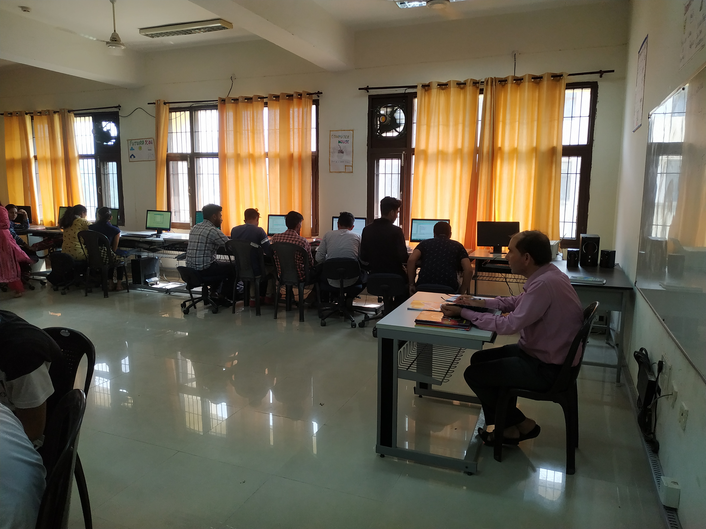
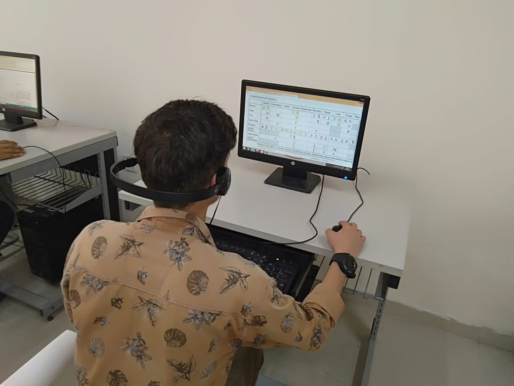

<div class="dark" [class.dark-mode]="isDarkMode" *ngIf="getCurrentLanguage() === 'English'"
    [style.font-size.px]="getTextSize()">
    <div class="container">
        <div
            class="fw-bold fs-2 red-title pt-3 border-bottom border-danger border-2  border-bottom border-danger border-2">
            Applied Science
        </div>
        <div class="py-3">
            <p>Applied science is a discipline of science that applies scientific knowledge to develop more practical
                applications, including inventions and other technological advancements.</p>

            <table class="table  table-hover border-danger border text-center ">
                <thead>
                    <tr>
                        <th scope="col">SERIAL NO.</th>
                        <th scope="col">NAME OF LAB</th>

                </tr>
            </thead>
            <tbody>
                <tr>
                    <td scope="row">1.</td>
                    <td>PHYSICS LAB</td>
                </tr>
                <tr>
                    <td scope="row">2.</td>
                    <td>CHEMISTRY LAB</td>
                </tr>
                <tr>
                    <td scope="row"> 3.</td>
                    <td>ENGLISH COMMUNICATION LAB</td>
                </tr>
            </tbody>
        </table>
    </div><div class="py-3">
        <div id="carouselExampleAutoplaying" class="carousel slide" data-bs-ride="carousel">
            <div class="carousel-inner">
                <div class="carousel-item active">
                    
                </div>
                <div class="carousel-item">
                    
                </div>
                <div class="carousel-item">
                    
                </div>
            </div>
            <button class="carousel-control-prev" type="button" data-bs-target="#carouselExampleAutoplaying"
                data-bs-slide="prev">
                <span class="carousel-control-prev-icon" aria-hidden="true"></span>
                <span class="visually-hidden">Previous</span>
            </button>
            <button class="carousel-control-next" type="button" data-bs-target="#carouselExampleAutoplaying"
                data-bs-slide="next">
                <span class="carousel-control-next-icon" aria-hidden="true"></span>
                <span class="visually-hidden">Next</span>
            </button>
        </div>
       </div>